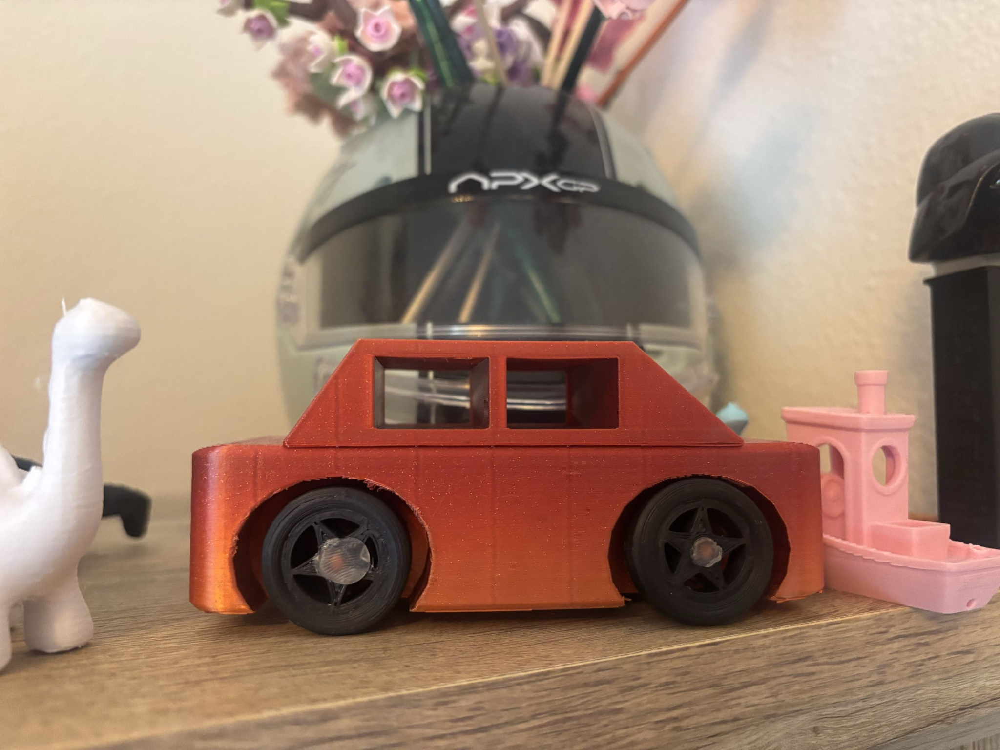

Why I built it
This was one of my earlier functional 3D-printing projects. I wanted to move beyond printing a single static object and make an assembly with separate parts that had to fit together and move.
Design and iteration
I created a boxy car body in Tinkercad with window openings and wheel-fender geometry, then printed two separate axles and four wheels.
First fit issue: the fender openings were undersized relative to the wheels, so the wheel geometry and surrounding body dimensions had to be adjusted.
Print-orientation issue: printing wheels upright produced poor circularity, which made them unsuitable for a rolling assembly. I changed the print approach to improve the wheel shape.
Final assembly: the axles passed through the body and the wheels were attached to the axles, producing a car that could actually roll.
What it taught me
The project was simple, but it was where I started learning that functional printing is mostly about iteration. Dimensions that look fine in CAD do not automatically produce moving parts, and print orientation can matter just as much as the geometry itself.